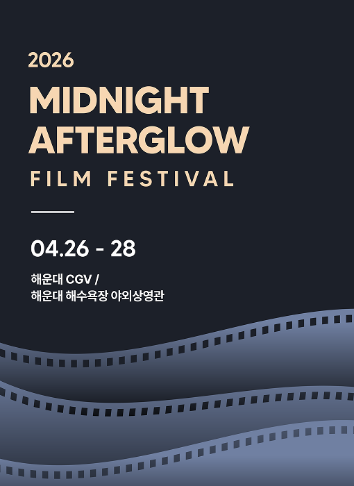

소개
MIDNIGHT AFTERGLOW FILM FESTIVAL(MAFF)은
해운대의
밤바다와 영화를 함께 즐길 수 있는 영화제로,
한 편의 영화가 하나의 밤으로 기억되는 특별한 경험을 선사합니다.
밤의 바다와 파도 소리,
스크린의 빛이 어우러진 공간 속에서
영화가 끝난 뒤에도 오래도록 마음속에 잔잔한 여운으로 남는 순간들을 담아내고자 합니다.
개최개요

2026년 4월 26일, MAFF 개막!
오시는 길
주소
부산광역시 해운대구 해운대로 620 라뮤에뜨빌딩 2층
버스
해운대도시철도역에서 하차
31, 38, 39, 63, 100, 100-1, 115-1,141, 181, 200, 1001, 3006
지하철
해운대역 7번 출구에서 도보 1분
자가용
내비게이션에 ‘CGV 해운대’ 검색
건물 내 주차장 및 인근 공영주차장 이용 가능
TOP